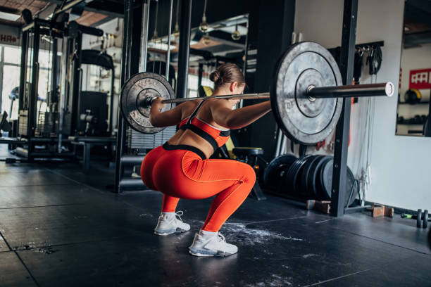

Ejercicios Detallados
Aperturas Peck Deck
Este ejercicio trabaja los músculos pectorales utilizando una máquina específica para aperturas. Es ideal para aislamiento muscular.
Cómo hacerlo: Siéntate en la máquina y ajusta el asiento para que tus brazos estén al nivel del pecho. Agarra las manillas con las palmas hacia adelante. Con un movimiento controlado, abre los brazos hasta que estén a la altura de los hombros, luego regresa lentamente a la posición inicial, manteniendo siempre la tensión en los pectorales.

Press de Banca
El press de banca es un ejercicio básico para trabajar todo el pectoral mayor, usando barra o mancuernas.
Cómo hacerlo: Recuéstate en el banco plano y agarra la barra con las manos ligeramente más anchas que el ancho de los hombros. Baja la barra controladamente hasta el pecho, asegurándote de mantener los pies en el suelo y la espalda arqueada. Empuja la barra hacia arriba hasta que los codos estén completamente extendidos.
Fondos en Paralelas
Este ejercicio trabaja el pecho y los tríceps. Se realiza con el peso corporal o con peso adicional.
Cómo hacerlo: Colócate entre dos barras paralelas y agárralas con las manos. Baja tu cuerpo controladamente, flexionando los codos hasta que los brazos estén a un ángulo de 90 grados. Luego, empuja el cuerpo hacia arriba hasta que los codos estén completamente extendidos. Para más intensidad, puedes añadir peso con un cinturón.

Press Inclinado
Trabaja el pectoral superior, usando una inclinación para enfocar el esfuerzo en la parte alta del pecho.
Cómo hacerlo: Colócate en un banco inclinado, ajustado a un ángulo de 30-45 grados. Toma una barra o mancuernas y baja el peso hacia el pecho, manteniendo los codos a un ángulo de 45 grados. Empuja el peso hacia arriba hasta que los codos estén extendidos, contrayendo los pectorales superiores.

Jalón al Pecho
Un ejercicio básico para fortalecer los músculos de la espalda, enfocándose en el dorsal ancho. Usa una máquina con polea.
Cómo hacerlo: Siéntate en la máquina de jalón con los pies firmemente apoyados en el suelo. Agarra la barra con las manos un poco más anchas que los hombros y tira de la barra hacia tu pecho, manteniendo los codos hacia abajo y atrás. Baja lentamente la barra de nuevo, controlando el movimiento en todo momento.
Remo Gironda
El remo Gironda trabaja toda la espalda baja y los dorsales, utilizando una barra o polea con técnica específica.
Cómo hacerlo: Colócate con los pies firmemente en el suelo y la barra frente a ti. Con una ligera flexión de las rodillas, inclina tu torso hacia adelante mientras mantienes la espalda recta. Agarra la barra y tira de ella hacia tu abdomen, asegurándote de mantener los codos pegados al cuerpo. Regresa lentamente a la posición inicial.
Remo con Barra
Ejercicio esencial para desarrollar la musculatura de la espalda media y baja, utilizando una barra con peso.
Cómo hacerlo: Con los pies a la altura de los hombros, flexiona ligeramente las rodillas y, manteniendo la espalda recta, inclina el torso hacia adelante. Toma la barra con un agarre por encima de las manos y, con los codos pegados al cuerpo, tira de la barra hacia el abdomen, concentrando el esfuerzo en los dorsales. Baja la barra controladamente.
Pull Over con Mancuerna
El pull over trabaja tanto la espalda como el pecho, utilizando una mancuerna o barra para realizar el movimiento.
Cómo hacerlo: Recuéstate en un banco plano, sosteniendo una mancuerna con ambas manos. Baja la mancuerna hacia atrás, manteniendo los codos ligeramente doblados, hasta sentir un buen estiramiento en los pectorales y dorsales. Luego, levanta la mancuerna hacia arriba y hacia adelante, concentrando el esfuerzo en la parte superior de la espalda y el pecho.
Sentadilla
Un ejercicio compuesto esencial que trabaja los glúteos, cuádriceps y espalda baja. Usa una barra con peso.
Cómo hacerlo: Coloca una barra sobre tus trapecios, mantén los pies a la altura de los hombros. Flexiona las rodillas y baja el cuerpo hacia abajo, asegurándote de que las rodillas no sobrepasen los dedos de los pies. Mantén la espalda recta y la cabeza erguida. Baja hasta que los muslos estén paralelos al suelo y luego empuja hacia arriba.
Prensa
Trabaja principalmente los cuádriceps, glúteos y isquiotibiales utilizando una máquina de prensa inclinada.
Cómo hacerlo: Siéntate en la máquina de prensa con los pies firmemente apoyados en la plataforma. Empuja la plataforma hacia arriba para despejar los bloques de seguridad. Baja la plataforma controladamente hacia tus muslos, manteniendo los pies planos y las rodillas alineadas con los pies. Empuja nuevamente hacia arriba hasta la posición inicial.

Extensión de Cuádriceps
Ejercicio de aislamiento para fortalecer el músculo del cuádriceps en una máquina específica.
Cómo hacerlo: Siéntate en la máquina de extensión de cuádriceps, ajusta el asiento para que tus piernas queden a la altura de los cojines. Empuja el cojín hacia arriba, extendiendo las piernas, hasta que estén completamente rectas. Luego, baja controladamente el peso.
Elevación de Talones
Ejercicio que trabaja los gemelos, utilizando una máquina de elevación de talones o haciendo el ejercicio de pie con barra.
Cómo hacerlo: Colócate en la máquina de elevación de talones, o de pie con una barra sobre los hombros. Con los pies apoyados en una superficie elevada, eleva los talones lo más alto posible, contrayendo los gemelos. Baja lentamente hasta que los talones estén cerca del suelo.
Elevaciones Laterales
Ejercicio de aislamiento que trabaja el deltoides lateral para unos hombros más definidos y fuertes.
Cómo hacerlo: De pie, sostén una mancuerna en cada mano con los brazos a los lados. Con una ligera flexión de los codos, eleva los brazos hacia los lados hasta que estén al nivel de los hombros. Baja controladamente y repite el movimiento.
Press Militar
El press militar es un ejercicio compuesto fundamental para trabajar los hombros, usando barra o mancuernas.
Cómo hacerlo: Siéntate o ponte de pie con una barra sobre los hombros. Empuja la barra hacia arriba hasta que los codos estén completamente extendidos. Mantén el torso erguido y evita que la espalda se arqueé durante el movimiento.
Elevaciones Frontales
Este ejercicio trabaja la parte frontal del hombro, con mancuernas o barra.
Cómo hacerlo: De pie, toma una mancuerna en cada mano con las palmas hacia abajo. Eleva los brazos al frente, hasta que estén paralelos al suelo, y luego bájalos controladamente. Mantén una ligera flexión de los codos durante el movimiento.
Face Pull
El face pull es un ejercicio que trabaja los hombros posteriores y los músculos de la parte superior de la espalda.
Cómo hacerlo: Usa una cuerda en una máquina de polea alta. Agarra la cuerda con las manos en pronación, y tira de ella hacia tu rostro, separando las manos y manteniendo los codos altos. Regresa lentamente a la posición inicial.